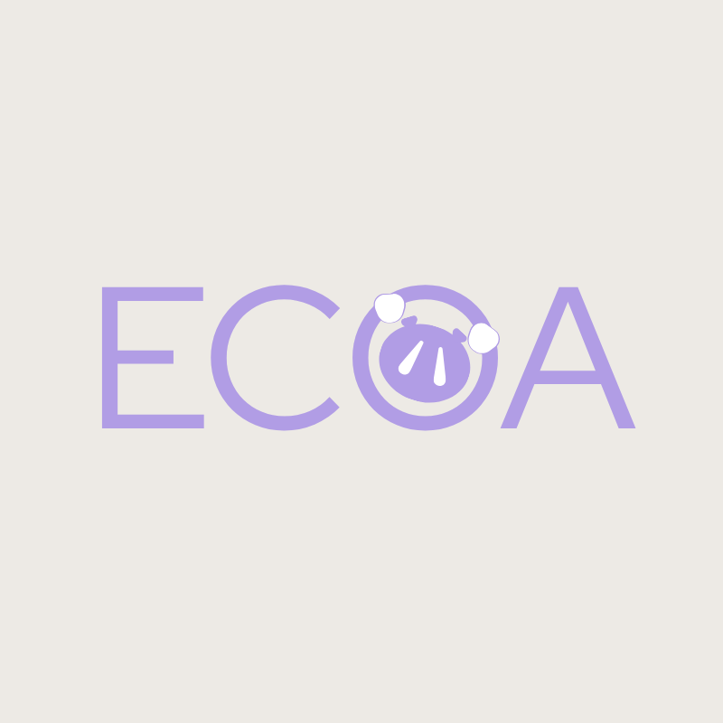

"Suas escolhas ecoam no tempo."
Trabalho de Conclusão de Curso (TCC)O ECOA é uma plataforma de gestão financeira comportamental concebida para auxiliar no combate às compras por impulso e no desenvolvimento de uma relação mais consciente e equilibrada com o dinheiro.
Diferente de gerenciadores tradicionais, o ECOA cruza o estado emocional diário com as movimentações financeiras, permitindo ao usuário mapear gatilhos como ansiedade, tédio e euforia antes que eles afetem seu orçamento.
Pesquisa, Engenharia e Design:
Projeto acadêmico orientado para Trabalho de Conclusão de Curso.
Mapeamento de perfil (Consumista, Endividado ou Controlado) com recomendações sob medida.
Registro diário de humor para entender o impacto psicológico nos hábitos de consumo.
Compromisso com o tratamento ético de dados e total soberania do titular sobre suas informações.